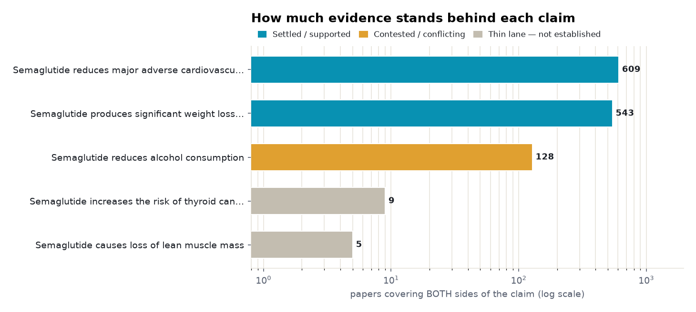
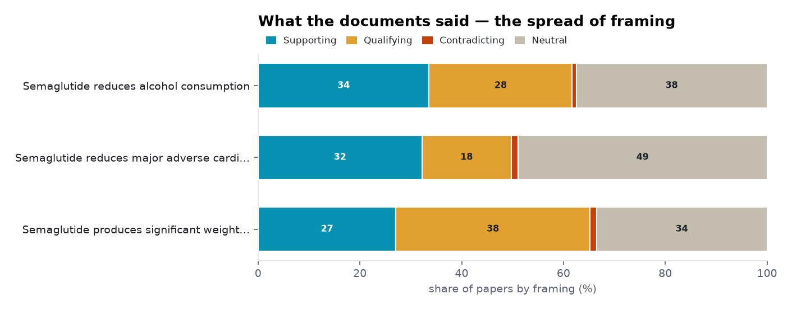
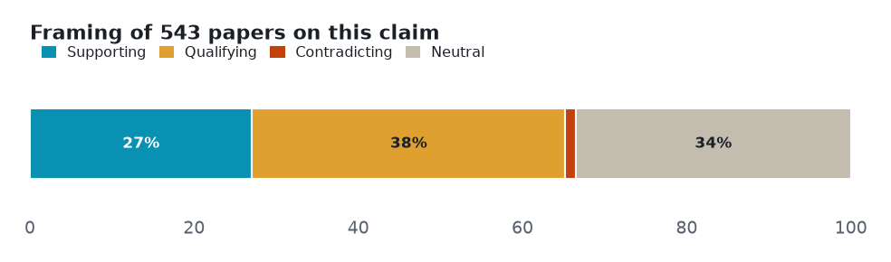
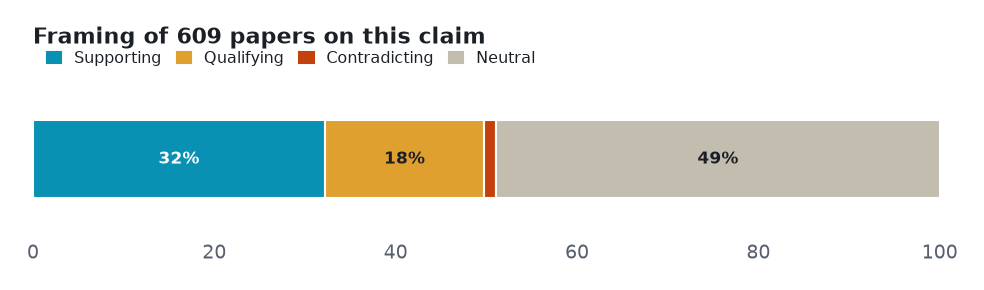
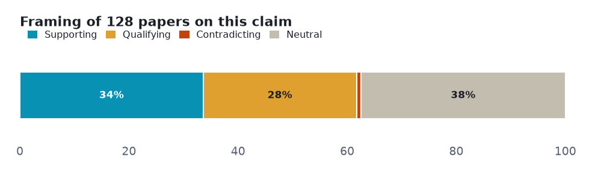
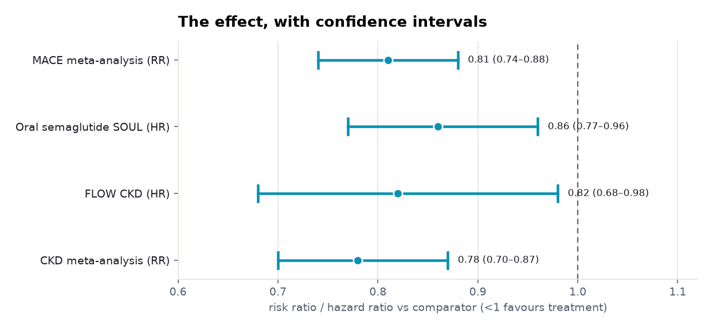
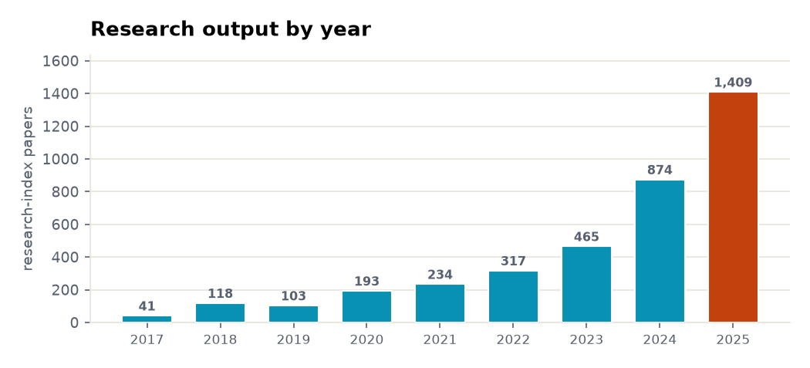

Five claims about semaglutide tested against both sides of the published literature — 2 that the evidence settles, 1 it leaves genuinely contested, 2 with too thin a lane to call.
Every number below is retrieved, not generated. Each angle is a claim run against the research layer on both sides — the papers that affirm it and the papers that push back — so the verdict reflects how much evidence exists and which way it leans, not a single cherry-picked study. Effect sizes are quoted verbatim and verified; thin lanes are reported as inconclusive rather than charted as fact.
| Subject | semaglutide (Ozempic / Wegovy) |
| Retrieved | 2026-11-06 |
| Coverage | research typed 107% · research 104.2% · biomedical 100% |
| Source | Prism public API — research.evidence (one call per angle) |
Each section is one claim. The bar shows how the papers framed it — supporting, qualifying (yes, but…), contradicting, or neutral — and the verdict weighs that spread against how deep the evidence runs. A claim can be loudly discussed yet thinly evidenced; the brief says which.
Two cross-cutting views before the angle-by-angle read: how much both-sides evidence each claim has, and how the literature splits on framing.


Mostly positive framing, with a substantial cautionary minority.

Common findings
Verdict: Well supported · both-sides papers: 543 · mean stance: +0.07
Mixed framing with no dominant lean.

Common findings
Verdict: Well supported · both-sides papers: 609 · mean stance: +0.19
Mostly positive framing, with a substantial cautionary minority. Phase-2 RCT positive (beta -0.48) but pooled RCTs non-significant (SMD -0.24, CI -0.70, 0.23).

Common findings
Verdict: Conflicting / emerging · both-sides papers: 128 · mean stance: +0.15
Only 9 papers cover both sides; semaglutide-specific data reassuring (<1% incidence); a class-level signal exists (OR 1.55, HR 1.58 for GLP-1 RAs).
Thin lane — 9 papers cover both sides. Not charted as established; reported as the boundary of the evidence.
Common findings
Verdict: Not established · both-sides papers: 9
Only 5 papers cover both sides; early sarcopenia signal in a pilot and a retrospective cohort; under-studied at the claim level.
Thin lane — 5 papers cover both sides. Not charted as established; reported as the boundary of the evidence.
Common findings
Verdict: Not established · both-sides papers: 5
Where the settled angles carry pooled effect sizes, here they are as a real forest plot — point estimate and 95% confidence interval, each verified against its source.

Common findings
The field's own tempo: research-index papers on this subject per year, from 41 in 2017 to 1,409 in 2025.

Counts and shares measured from the data. Effect sizes verbatim and verified. Thin lanes reported inconclusive, not charted.
Each angle is one call against the research-evidence layer: the claim is posed, both sides of the literature are retrieved, and the framing tally is computed from the returned papers. Thin lanes are named, not inflated — the point of the exercise is to show where the evidence is deep, where it is contested, and where it barely exists.
A Prism worked example. Charts are generated from the retrieved data; every quoted finding is verbatim and verified. data.json holds the underlying numbers.